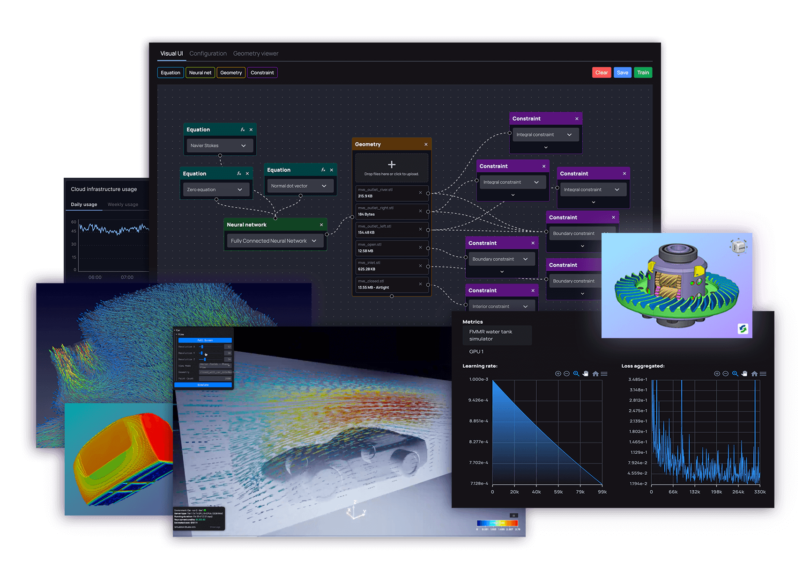
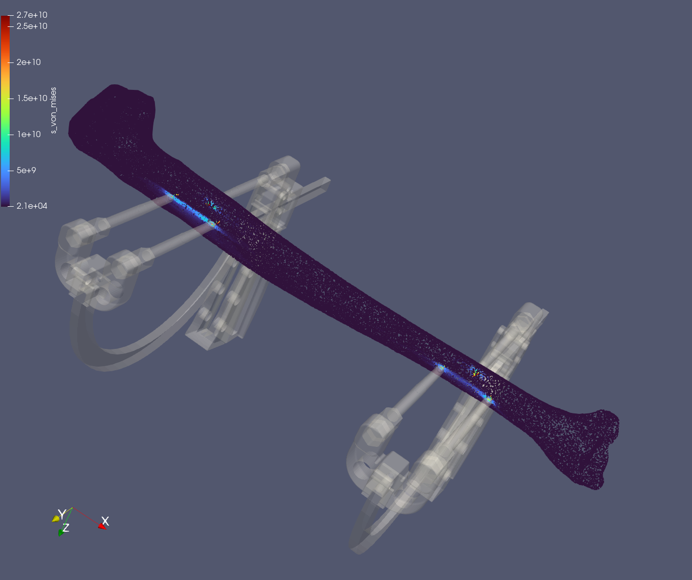
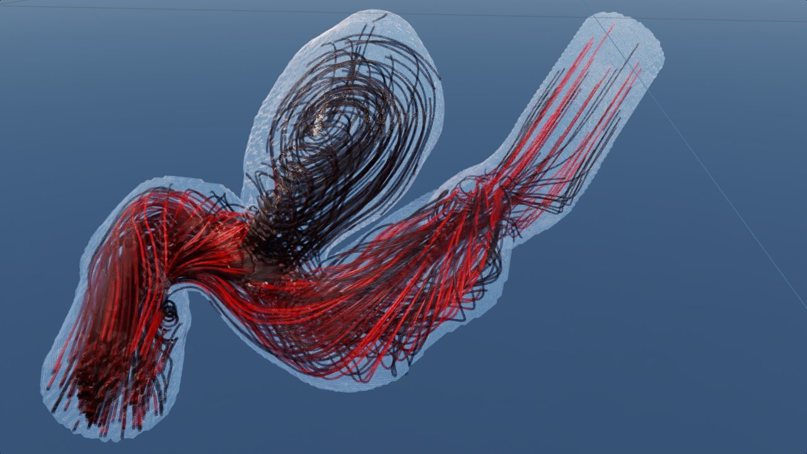
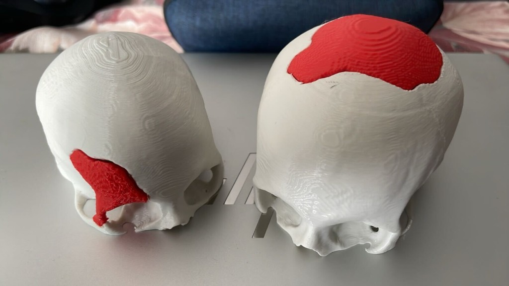

DimensionLab's Journey in Human-Centred AI for Bioengineering
Michal Takáč, PhD Co-founder, DimensionLab22 June 2026 11:00 – 12:30 CETAudience Engineers · Clinicians · Researchers
In deep-tech AI, the hard part is not the model. It is the human system around it — fellow engineers, customers, regulators, and ultimately clinicians and patients — and whether they can trust what you built.
— our thesis for the next 90 minutes
01 · Origin
Engineering physical things is painfully slow.
Simulation should be the superpower for anyone who builds physical things — across energy, mobility, industry, and research. Most of the time, it isn't.
The bottleneck
Virtual prototyping still takes weeks to months.
Expert mesh setup for every geometry change — hours to days of skilled labour.
Long HPC solves for CFD, FEA, multiphysics — minutes to weeks per run.
Iteration is expensive — so most teams iterate too little, too late.
Tools are inaccessible to most domain experts — the engineers, designers, and scientists closest to the problem.
Why iteration speed is everything. Every geometry change that takes days is a design decision deferred. Teams that can only afford a handful of runs converge on "good enough", not "best" — and that gap compounds across the life of a product.
DimensionLab's founding bet (2021)
Make physics simulation learnable, fast, and accessible.
Learnable
Train a model, run physics in milliseconds
AI surrogate models — PINNs, FNOs, GNNs — that learn the physics once and infer near-instantly.
Fast
Cloud GPUs in three clicks
Hide the HPC plumbing. A no-code visual editor, dockerized training, in-browser visualization.
Accessible
For engineers and scientists, not ML PhDs
UX rethink for a much wider user base — the same shift that happened in graphics, then in data.
02 · The Siml.ai chapter
We built a platform for AI physics simulators.
A full-stack product — visual editor, cloud training, interactive 3D viewer — powered by NVIDIA Modulus and Unreal Pixel Streaming.
Siml.ai · platform overview
One platform, three jobs.
Model Engineer — no-code / low-code visual editor to design a physics simulator.
SITE — Simulator Inference & Training Environment running on cloud GPUs.
Simulation Studio — high-fidelity interactive 3D viewer, streamed from the cloud.

Siml.ai web platform — projects, simulators, datasets, environments.
The core idea — physics-informed neural networks
Bake the physics into the loss.
A PINN learns a field u(x,t) by minimising a loss that includes the residual of the governing PDE itself — e.g. Navier–Stokes, elasticity, heat — alongside boundary and data terms.
Loss
L = Ldata + λ1·LPDE + λ2·LBC + λ3·LIC
Train once on a parameterised family of geometries / conditions. Inference becomes milliseconds to seconds, instead of hours.
Extrapolates beyond training data — physics constrains the solution space.
Interpretable — parameters have physical meaning.
Data-efficient — physics fills in the gaps where measured data is scarce or expensive to obtain.
Architectures we use — PINNs, Fourier networks & FNOs, modified Fourier networks, SIREN, DeepONets, MeshGraphNets.
Model Engineer
Build a simulator the way you'd build a Figma file.
Lesson for builders in the room: a deep-tech platform is at least three products in a trench coat — a frontend, a backend, and a compute fabric. Each one has its own users and its own failure modes.
What this unlocked
Hours instead of weeks. Sometimes seconds.
~1000×
faster than traditional FEM on bone-fixator stress prediction.
~50,000×
faster simulation inference compared to baseline CFD in our internal benchmarks.
3 clicks
to launch GPU training in the cloud from a fresh project.
2,400+
early-adopter users across academia and industry by 2024.
Be careful with these numbers. They are real, but case-specific. The point is not "AI beats CFD". The point is that for the right family of problems, the cost of one extra simulation drops to near-zero — and that changes what an engineer can do in a single workday.
Case · biomechanics engineering
Bone-fixator stress, in milliseconds.
~1000× faster than the FEM baseline the engineering team relied on.
~98% cost reduction per design iteration.
No mesh, no ML expert required — design engineers can sweep parameters themselves.
First time we watched an engineering team iterate on a real device design in a single working session — not one overnight FEA run.

Tibia fixator — von Mises stress field predicted by a trained PINN surrogate.

Intracranial aneurysm — streamlines and pressure field, rendered in NVIDIA Omniverse.
Case · cardiovascular research
Aneurysm haemodynamics on demand.
Anatomical geometry from segmented CT — the same data pipeline we would later reuse for CrAInial.
Trained once on a parameterised family — inferred per geometry in seconds.
Interactive viewer — researchers can explore "what if" scenarios in seconds, not weeks.
"What used to take us four years in ANSYS we did with six AI simulators in three weeks — 100 compute hours per iteration collapsed to six seconds."
— Pavol Breza, RFB s.r.o. (river hydroplant simulator)
~96% cost reduction on the simulation work for the project.
Iteration time went from weeks to single working sessions.
Trust came from validation against the original ANSYS runs they already owned.
Trust is not built by a faster number. It is built by showing the same answer faster than the tool they already believe.
Where the platform landed
A real product. A real lesson.
2,400+ registered users by end of 2024 — meaningful early-adopter density.
Paying customers in EU industry — hydropower, structural, biomedical.
~€40k revenue in 2024 — real money, not a venture-scale trajectory yet.
€970k raised (pre-seed + grants) across the Siml.ai chapter.
The honest read. The technology worked. The platform attracted users. But a horizontal AI-simulation platform sold to a fragmented engineering market is a very hard go-to-market — and we did not find a repeatable enterprise motion fast enough to justify scaling.
03 · Candid lessons
Deep-tech is a trust business, not a code business.
What worked, what didn't, and what we carried into the next chapter.
What worked
Five things we'd do again.
Build the visualization story early. A streamed 3D viewer earned more trust than any benchmark table.
Co-develop with one real domain user. RFB's hydroplant work taught us more than ten polite enterprise calls.
Validate against the tool they already trust. Not "AI vs CFD" — "AI matches the CFD you already paid for".
Hire engineers who write production code and read PDE papers. Those people are rare and worth the search.
Stay close to NVIDIA. Modulus, Omniverse, and the developer community gave us leverage we could not have built alone.
What broke — and why we sunset the horizontal platform
Five things we wish we had named earlier.
Horizontal platforms need horizontal trust. Every new vertical re-starts the validation conversation from zero.
"Faster" is not a buyer. Procurement buys insurance, not speed — until you map ROI to their bottleneck.
Self-serve and enterprise pull in opposite directions. Trying to win both at 10 people is a quiet way to win neither.
Cloud GPU spend kills you slowly. Your unit economics live or die on training run efficiency.
Founders are the validation surface. Until you have certification, your CV is the regulatory pathway.
"We don't need a platform for every physics problem. We need to take everything we learned and go all-in on one — the single problem where being right matters most — and earn the right to be trusted there first."
— internal note, Q3 2025 · the decision to focus
04 · The pivot
From Siml.ai to CrAInial.
Take everything we learned about physics-aware AI, HCI, and streamed visualization — and aim it at one clinical problem.
Why cranial implants · why now
A clinical workflow that almost everyone gets wrong.
20M+
Traumatic brain injuries per year worldwide.
~50,000
Cranioplasties per year — largest revenue share in the US.
4–14 days
To design and revise an implant by hand today.
$3.5k – $53k
Per-implant cost — wildly unequal across regions.
Complex post-traumatic defects often cannot be created by mirroring a healthy side of the skull. Suboptimal implants drive infections, fluid leakage, pressure-induced pain — and re-surgery.
Why this is solvable now (and not five years ago)
Three curves crossed in 2024–2025.
Models
Point-cloud diffusion for shape
Generative models now produce anatomically plausible 3D shapes conditioned on a defect — not just slices.
Agents
Reliable tool-using LLMs
Agentic AI can drive segmentation, reporting, and audit steps under clinician oversight.
Manufacturing
Custom 3D-printed implants are routine
~125k cranial reconstructions expected globally in 2025, with ~48% custom 3D-printed — the supply chain is ready.
05 · CrAInial
From a defective scan to a 3D-print-ready model.
An agentic workflow with the surgeon in the loop — never out of it.
CrAInial workflow
Five steps · one continuous clinical loop.
01CT arrives
Patient scan enters the portal. Anonymised, audited, encrypted at rest.
02Clean & segment
AI cleans artefacts, segments the skull, isolates the defect region.
03Generate implant
Point-cloud diffusion model proposes implant shapes, including non-mirrorable defects.
04Review & refine
Surgeon and a 3D modeller refine the proposal together in the browser; surgeon signs off. Fixation plates suggested.
05Print-ready + report
STL/3D-print bundle + regulatory-compliant report exported for manufacturing.
Important — humans stay in the loop. The surgeon owns the clinical decision, and a 3D modeller / technical specialist still finalises the implant for print. CrAInial compresses the time between "scan received" and "print-ready" — for now it makes those people far faster, it does not replace them.
Under the hood · two generations of models
From cran-1 to cran-2.
Generation 1 · cran-1
A two-stage geometric pipeline
Point-cloud diffusion proposed the implant shape, then a separate voxelization model reconstructed a printable volume. Capable — but two heavy models to train, tune, and validate, with error compounding across the hand-off.
Generation 2 · cran-2 — running in the demo
A single self-supervised model
One self-supervised autoencoder learns to complete the missing skull region directly. Fewer moving parts, a much simpler pipeline to reason about — and far easier to validate for a medical device. Trained on the PERUN supercomputer.
95%
reconstruction accuracy with cran-2.
4700×
faster than the cran-1 diffusion + voxelization pipeline.
2 → 1
models — a single network replaces the dual-stage pipeline.
How we build · DimensionLab as an agentic organization
We rebuilt the company to run on agents — humans in the loop where it matters.
Using Paperclip as a control plane, we wired our technical and go-to-market work into agentic systems that run continuously — with human sign-off at the decisions that count. The same autoresearch loop is what built cran-2.
Autoresearch — agents read papers, propose architectures, and run ML experiments end-to-end (Karpathy-style autoresearch).
CrAInial R&D — agents orchestrated RunPod H200 training campaigns and SLURM autoresearch to iterate from cran-1 to cran-2.
Full SDLC + company "brain" — deploy models, manage a living knowledge base, answerable in Slack with the right context.
Sales, marketing & ops — pipelines, reporting, management — and a bridge to each teammate's own AI assistant.
6.7B
tokens observed across our agent fleet — including the autoresearch that built cran-2.
5,610
agent runs observed in the control plane.
64d 10h
continuous observation window of agent activity.
7.1×
more agent-authored comments than human (1,916 : 270).

Two test cases — 3D-printed skull models with generated implants (red), printed for physical validation.
Validation · from pixels to a part you can hold
We print the cases, not just the slides.
Physical fit checks — generated implants 3D-printed against patient-specific skull models.
Closing the loop — geometry verified in the hand, not only on a screen.
Trust at this stake is tactile. A surgeon should be able to hold the implant against the skull before it ever reaches an operating room.
CrAInial · one platform, two audiences
Clinical teams and implant producers, in the same loop.
Clinical portal
Planning · segmentation · administration
Surgeons and 3D modellers / clinical engineers upload scans, plan the surgery, refine and review implant proposals, and sign off on the design. Audit trail attached to every action.
Producer portal
Generate · review · print
Implant producers receive print-ready geometry, fixation plate suggestions, and a regulation-aligned report ready for the device file.
Designing for clinician authority
Four human-in-the-loop principles.
Surface uncertainty, don't hide it. Every generated geometry ships with a confidence and provenance trail.
Keep a 3D modeller in the loop. The surgeon directs clinical intent; a technical 3D specialist — in-house or partner — finalises the geometry for print. Our tooling makes that iteration loop dramatically faster; for now it does not remove the human.
Never auto-submit. No print is dispatched without explicit clinician sign-off and identity logging.
Explainability is a UI, not a paper. Show which anatomical neighbourhood drove which decision.
The trust stack we are building
Regulation is not a checkbox. It is the architecture.
Software
IEC 62304
Medical device software lifecycle.
Quality
ISO 13485
Quality management for medical devices.
Market
FDA pathway
US 510(k) / De Novo strategy in scope.
Models
ASME V&V 40
Credibility evidence for computational models in medical devices.
What this means in practice. Every model, dataset, and pipeline change is versioned, reproducible, and reviewable. The engineering team and the regulatory team share the same source of truth.
Equity as a design constraint
$3,500 in Mumbai. $53,000 in Boston. Same defect.
Cost of an implant varies more than 10× across regions today.
Design time of 4–14 days excludes the patients who need a decision fastest.
AI generation collapses the marginal design cost — opening pricing models that don't punish low-income systems.
We treat equitable access as a first-class product requirement: tiered pricing, hospital-side deployment options, and partnerships that respect local manufacturing capacity.
Built with, not for
Clinicians, engineers, manufacturers — at the same table.
Clinical & biomedical
Biomedical Engineering s.r.o.
Strategic advisor and "Manufacturing hospital" E2E integration partner. Prof. Radovan Hudák, biomedical engineering pioneer at TU Košice.
Research
Clinical datasets & HPC
Curated defective-skull datasets, joint validation work, access to academic HPC for training.
Manufacturing
3D-print integrations
Bridging our outputs into existing certified implant manufacturing workflows.
Where we are today
Smaller surface. Sharper edge.
€970k
Raised to date (VC + grants), across Siml.ai & CrAInial.
$3M
Seed round planned — team, US presence, regulatory.
~$1.6B
Cranial implants market today (~7% CAGR) — first beachhead.
~$50B
Adjacent maxillofacial + orthopaedic implant market — next steps.
Thank you
Let's build the next chapter together.
If you are a clinician, engineer, or student working on AI for surgery, ageing, or human-centred care — we want to hear from you.
hello@dimensionlab.org dimensionlab.orgMichal Takáč linkedin.com/in/michaltakacSlides Available after the session